Improved ADOM Guidebook
Previous - TOC - Next
Day and date - Star sign - Birth messages - Gender - Race and class -
Class powers - Starting attributes - Lifespans - Special considerations - Bard's pets -
Heir items - History - Opening questions - Talents - Name - Starting equipment -
Personalized game settings
Character creation
Character creation is done at the beginning of the game. During this process, you choose star sign (random in free version), gender, race, class (profession), attributes (points or questions)
(only questions in free version), starting talents, and name. Your character's age, history, and any special birth messages are chosen for you.
Hair, eyes, complexion, weight, and height are generated randomly and have no effect in-game. The minor exception is weight, which is taken into account when entering the Quickling Tree
and calculating the chance of ice beneath the PC breaking.
0.1.1 Day and date effects
| Starting a game on | Results in the message | And has the following effects
| | Creator's Day (TB's birthday, July 2nd)
| You feel that starting your adventure on Creator's Day was a good idea.
| PC starts with Lucky and Fate smiles; also, if the day falls on a Monday, HP are not reduced.
|
| Christmas Eve (December 24th)
| A lone star leads you to this remote valley.
| PC starts with Fate smiles.
|
| New Year's Eve (December 31st)
| You feel well prepared for the coming year.
| PC starts with six blessed potions of booze (Dwarves get uncursed).
|
| Any Friday the 13th
| You feel unlucky.
| PC starts Cursed.
|
| Any Monday
| You feel slightly exhausted today.
| PC starts slightly low on HP (-2d2 HP).
|
| August 22nd
| no message
| PC starts with the Boon to the Family talent.
|
| Resurrection Day (August 30th)
| You feel as if a whole new life is waiting for you!
| PC starts with Lucky, +1 To and +3 Ma. Additionaly amulet of resurrection will be generated in Barnabas's shop.
|
| Halloween (October 31st)
| You feel treated.
| PC starts with 1d6+2 blessed bits of plain candy and 1d2 blessed bits of gnomish candy.
|
There are of course Ancardian day and date effects as well, which are well covered in the ADOM Manual.
Press @ or Ctrl-e to learn Ancardian month, day, and time. You start the game at day 1 of Unicorn, at midnight.
0.1.2 Birth
0.1.2.1 Star sign
Check out the ADOM Manual for general game-related effect of starsigns. Additional tips are provided here.
- Raven:
 +10 Speed, +2 Pe, messengers, harder to trick, stronger companions
+10 Speed, +2 Pe, messengers, harder to trick, stronger companions
The +10 to Speed is good for all PCs. It can save the life of low level PCs who need to run away from a monster they can't handle. The "messengers
will reach you faster" refers to the delivery of the Rune-covered Trident, which happens faster for those born in this month, at level 16 rather than 36, a nice bonus. The "harder
to trick by deceptions" grants 75% chance to evade a doppelganger's confusion attack. The stronger companions characteristic makes this month excellent for Bards.
- Book:
 +3 Le, lawful tendencies, one free skill increase every level, better at learning spells
+3 Le, lawful tendencies, one free skill increase every level, better at learning spells
Lawful tendencies means +500 to initial alignment and decrease of all alignment changes towards chaotic by 10%.
One free skill increase each level helps all PCs, especially those with low Learning. Increased chance to learn spells
means borderline casters have a better chance, experiencing less negative effects while learning spells. This is not the ideal month for
a Wizard – they are already great at learning spells. More suited to elven fighting classes or a Dwarvish Paladin.
- Wand:
+2 Ch, lawful tendencies, if neutral: +2 Ma, +10 PP, 10% cheaper spells
Lawful tendencies means +500 to initial alignment and decrease of all alignment changes towards chaotic by 10%.
Here we have the sign for a neutral Wizard. Gray Elven Wizards are ideal with their naturally high Mana and neutral alignment.
They are somewhat difficult to keep alive in the early game but become enormously powerful in the mid- and endgame. Note that both Wand-born
Healers of chaotic races and Necromancers of lawful races start out neutral.
- Unicorn:
 +2 Ap, harder to corrupt, harder to change from lawful
+2 Ap, harder to corrupt, harder to change from lawful
Generic sign with resistance to corruption. Pretty attractive for any PC going for an Ultra ending, especially an aspiring Avatar of Order. The fact
that lawful alignment is difficult to change means such a PC can commit a few chaotic acts and get away with it without becoming a fallen champion.
The Unicorn birthsign reduces corruption by 19% if the PC is L, by 37% if L+, and increases it by 30% for C-. All negative alignment changes for lawful PCs
are reduced by 20%.
- Salamander:
 +1 Ch, +3 Ma, +20% PP, fire magic 20% cheaper
+1 Ch, +3 Ma, +20% PP, fire magic 20% cheaper
Very attractive for Elementalists, who rely on a lot of fire magic. Not half bad for a Necromancer who finds some fire-based spellbooks, either.
Necromancers need that +3 to Mana. Fire magic includes: Burning Hands, Fire Bolt, Fireball, and Improved Fireball.
- Dragon:
+2 St, +1 To, -3 Wi, 10% increased effects from Tactics setting, 10% less marks for weapon skills, combat magic 10% cheaper
Fighters. The +1 to Toughness is not significant – that is within the variability for the attribute for identical race/class PCs. The -3 to Willpower
is significant and makes this unattractive for those who need it in the early game – Wizards, Mindcrafters. Not a bad month for Paladins with both
weapon and combat magic costs reduced. Combat magic includes: Destroy Undead, Magic Missile, Burning Hands, Fire Bolt, Frost Bolt, Acid Bolt, Fireball, Improved Fireball,
Death Ray.
- Sword:
 +1 Le, 10% increased positive effects from Tactics setting, 20% less marks for weapon skills
+1 Le, 10% increased positive effects from Tactics setting, 20% less marks for weapon skills
Learning bonus is insignificant, although it can push a PC from illiterate to literate. The 20% reduction in cost to train melee weapon skills makes this
attractive for a PC that really wants to become super-proficient with a weapon. Not a bad choice for Rangers, who start the game dual wielding swords.
- Falcon:
 +2 Wi, +1 Ch, Survival skill, one free talent
+2 Wi, +1 Ch, Survival skill, one free talent
Grants the Survival skill to any character. This skill is generally considered as being of little use (section 0.4).
The Willpower bonus is somewhat useful for spellcasters and Mindcrafters, although better starsigns exist for those classes.
The Charisma bonus is of little significance for any character. The free talent is good for all PCs, especially for Gnomish and Hurthling Bards,
as it guarantees them both a very useful Heir gift and the possibility to go for the Treasure Hunter talent.
- Cup:
+2 Le, 10% less experience points to advance, one free skill advance every two levels, learns spells 20% more effectively
Another sign for Wizards. Higher Learning to start and the 10% reduction to gain a level means they advance rapidly, which is very helpful in keeping them
alive at low level. The 20% effectivity increase in learning spells also helps keep them alive in the early game, while the player has not had time to raise
their Learning attribute. While this bonus does not affect the chance to successfully learn a spell, it directly influences spell knowledge gained.
- Candle:
 heals faster, one free talent, 16% reduced prayer costs
heals faster, one free talent, 16% reduced prayer costs
This can be an unbelievable sign for Trolls. They heal rapidly anyway, but those born in this month almost don't need the Healing skill! Almost. Get it and they
seem to have natural regeneration. Playing a trollish Healer born in this month is almost cheating. ;-) Candle-born characters are guaranteed to heal 2 hitpoints
every 12 turns. Candle has been slightly nerfed in R+, providing 2 hitpoints every 20 turns, making it about 80% as effective as Healing at 100, instead of 133% as effective.
- Wolf:
+3 Wi, +3 Pe, food 10% 25% more nutritious
Significant benefits to Perception and Willpower. The Willpower is good for Wizards and Mindcrafters, of course.
Drakeling characters, relying on their acid spit ability, can benefit from nutrition bonus, while Troll
adventurers will experience less difficulty in managing their increased food requirements.
- Tree:
+5 Wi, +2 To, +1 PV, harder to change alignment
Made for Mindcrafters, who really need that +5 to Willpower in the early game. Not bad for Wizards either. The Tree birthsign reduces all alignment changes by 10%.
The Candle starsign is by far the best for any character, with Raven being the distant second.
The Candle healing effect is great for everyone and it is better than the Healing skill at 100. Raven's speed bonus allows all characters to outrun most opponents.
The effects of other starsigns are utterly negligible when compared to Raven and especially Candle.
0.1.2.2 Special birth messages
If you are really lucky (5% chance), one of these messages will be generated along with the star sign:
The night you were born....
- ...the local undead were seen packing up and moving away.
It means that your character will gain (or is born with?) the "natural
enemy of undead" intrinsic. This makes undead flee from you periodically.
This also means you always slay undead in melee – same effect as !Unde weapons.
- ...your long-lost brother showed up again.
Greater chance of special locations generated in dungeons (hives, shops,
pools, etc).
- ...a two-headed calf was born the same night.
10% fewer experience points are required for an experience level increase.
- ...a falling star killed the village elder.
10% fewer experience points are required for an experience level increase.
0.1.3 Gender
The gender of the character has little significance. The following table lists all known gameplay differences.
Gender differences
| Condition | Male ♂ | Female ♀ | More info
|
|---|
| Start with | +1 St | +1 Dx |
|
| Shop prices depend on | Ch | Ap |
|
| Wedding ring works for Banshee | yes | no | 3.10
|
| Wedding ring tames [1] | berserkers | female berserkers | 0.11.5
|
| Frog quest is available | no | yes | Appendix K
|
| Cheaper keys | no | yes | 1.3.4
|
| Base Smithing cost | 5000 gp | 5250 gp | 0.15.4
|
[1] In R+, wedding ring tames berserkers of opposite gender, fixing unintended behavior from 1.1.1.
0.1.4 Race and class
A list of the races and classes (called professions) can be found in the ADOM Manual. It also gives a bit of background about each,
much of which is flavor and irrelevant in terms of gameplay.
0.1.4.1 Specific starting trained skills and alignment
Each race has unique characteristics including initial alignment, trained skills and modifiers to attributes. Skills in ADOM vary in terms of availability. All PCs are born with
Climbing [1dDx + 1z10 + 20], First Aid [1dLe + 1z10 + 15], Haggling [1dCh + 1z10 + 15], and Listening [1dPe + 1z10 + 20]. All PCs other than Beastfighters and Barbarians with
Learning attribute of 10 or greater are born with Literacy [Le*4]. Many skills can be taught or trained by various NPCs during the game. Other skills are much more difficult
to obtain if the PC is not born with them. Skills other than Alertness and Healing can be wished for. Any skill can be obtained from a potion of education, but this is a matter
of random chance and cannot be counted on. Skills available only from wishes or potions of education are referred to as "Nonguaranteed skills" for the sake of the tables below.
The first table shows the starting alignment and trained skills [starting value] that each race is born with (z is a dice with a zero: 1z10 means a number between 0 and 9, ie.
1z5+5 means a value between 5 and 9).
Race-specific starting alignment and trained skills
| Race | Tiles | Initial alignment | Guaranteed or NPC-available skills [starting value] | Nonguaranteed skills [starting value]
|
|---|
| Drakeling | 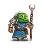 | neutral | Swimming [1z20 + 40] | Alertness [1z20 + 20], Food Preservation [1z25 + 20], Music [1z10 + 5]
|
| Dwarf | 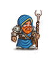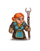 | lawful | Climbing [1z10 + 10], Detect Traps [1z10 + 10], Smithing [1z30 + 20] | Metallurgy [1z30 + 20] , Mining [1z10 + 60]
|
| Dark Elf |   | chaotic | Climbing [1z20 + 20], Stealth [1z20 + 30] | Alertness [1z30 + 10], Find Weakness [1z10 + 10]
|
| Gray Elf | 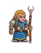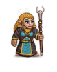 | neutral | Listening [1z10 + 15], Literacy [1z10 + 30], Stealth [1z10 + 30] | Dodge [1z10 + 10]
|
| High Elf |  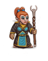 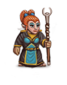 | lawful | Listening [1z10 + 20], Literacy [1z10 + 20], Stealth [1z10 + 20] | Dodge [1z10 + 20]
|
| Gnome | 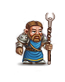 | neutral | Listening [1z30 + 10], Pick Pockets [1z10 + 10] | Gemology [1z10 + 10], Mining [1z5 + 5], Ventriloquism [1z20 + 20]
|
| Human |   | neutral | Climbing [1z10 + 10], Haggling [1z20 + 10], Swimming [1z20 + 20] | Food Preservation [1z10 + 10]
|
| Hurthling | 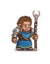 | lawful | Stealth [1z20 + 40] | Archery [1z5 + 10], Cooking [1z20 + 50], Food Preservation [1z30 + 30], Gardening [1z15 + 15]
|
| Orc |   | chaotic | Backstabbing [1z5 + 5], Climbing [1z20 + 20] | Find Weakness [1z5 + 5], Metallurgy [1z5 + 5], Mining [1z10 + 5]
|
| Troll |  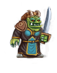 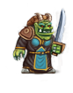 | chaotic | Bridge Building [1z10 + 10] | Athletics [1z30 + 20], Food Preservation [1z40 + 20], Gemology [1z5 + 10], Mining [1z10 + 10]
|
| Mist Elf | 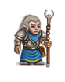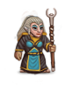 | neutral | Literacy [1z10 + 40], Stealth [1z10 + 40] | Alertness [1z10 + 10], Dodge [1z10 + 10], Concentration [1z10 + 15], Necromancy [1z10 + 10]
|
| Ratling |  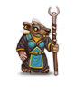 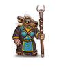 | neutral | Climbing [1z20 + 20], Haggling [1z20 + 30], Stealth [1z10 + 20] | Appraising [1z20 + 30], Detect Item Status [1z5 + 5], Survival [1z20 + 30], Swimming [1z20 + 30]
|
Lawful alignment is +2000, neutral is 0, and chaotic -2000. This is then modified by class and starsign: Druids have alignment
set to 0, Necromancers get -1500 and Healers get +1000. Lawful tendencies starsigns (Wand and Book) get +500. Chaos Knights start with alignment set to -10000.
A table similar to that above showing the trained skills each class is born with:
Class-specific starting trained skills
| Class | Guaranteed or NPC-available skills [starting value] | Nonguaranteed skills [starting value]
|
|---|
| Archer | Climbing [1z20 + 30], Listening [1z10 + 30], Stealth [1z20 + 30]
| Alertness [1z20 + 20], Archery [1z30 + 50], Concentration [1z20 + 20], Dodge [1z20 + 30], Fletchery [1z20 + 30]
|
| Assassin | Backstabbing [1z20 + 30], Climbing [1zDx + 20], Detect Traps [1zPe + 15], Pick Locks [1z20 + 30], Stealth [1z10 + 30],
Two Weapon Combat [1z6 * 1z6 + 20] | Alchemy [10], Alertness [1z30 + 20], Archery [1z10 + 20], Dodge [1z10 + 10], Find Weakness [1z30 + 20]
|
| Barbarian | Climbing [1z20 + 50], First Aid [1z20 + 20], Herbalism [1z10 + 20], Stealth [1z30 + 30], Swimming [1z30 + 30], Two Weapon Combat [1z20 + 20]
| Athletics [1z30 + 30], Dodge [1z20 + 50], Survival [1z20 + 30], Woodcraft [1z10 + 10]
|
| Bard | None guaranteed [1] | Music [1z40 + 60]
|
| Beastfighter | Climbing [1z30 + 30], Healing [1z30 + 30], Herbalism [1z30 + 30], Listening [1z30 + 30], Stealth [1z30 + 30], Swimming [1z30 + 30]
| Athletics [1z30 + 30], Dodge [1z30 + 30], Survival [1z10 + 20]
|
| Druid | Climbing [1z20 + 30], First Aid [1z20 + 40], Healing [1z10 + 40], Herbalism [1z30 + 60], Listening [1z20 + 30], Literacy [1z20 + 40],
Swimming [1z20 + 30] | Concentration [1z20 + 30], Gardening [1z5 + 5], Survival [1z20 + 30], Woodcraft [1z5 + 5]
|
| Elementalist | Climbing [1z20 + 20], Healing [1z10 + 5], Listening [1z10 + 10], Literacy [1z30 + 30], Swimming [1z20 + 20]
| Concentration [1z30 + 50], Gemology [1z20 + 20], Metallurgy [1z20 + 20]
|
| Farmer | Bridge Building [1z10 + 10], First Aid [1z20 + 30], Haggling [1z20 + 20], Herbalism [1z30 + 20], Smithing [1z10 + 10], Stealth [1z10 + 10]
| Archery [1z20 + 5], Cooking [1z10 + 10], Fletchery [1z10 + 10], Food Preservation [1z30 + 40], Gardening [1z(Le*2) + 20], Survival [1z20 + 40], Woodcraft [1z10 + 5]
|
| Fighter | Stealth [1z10 + 10], Two Weapon Combat [1z5 + 5]
| Athletics [1zTo + 1z5 + 25], Archery [1zDx + 10], Dodge [1zDx + 15], Find Weakness [1z10 + 10], Metallurgy [1z10 + 10]
|
| Healer | First Aid [1z30 + 40], Healing [1z30 + 50], Herbalism [1z40 + 40], Literacy [1z50 + 50]
| Alertness [1z10 + 10], Concentration [1zWi + 20], Cooking [1z30 + 10], Find Weakness [1z10 + 10]
|
| Merchant | Haggling [1z30 + 40], Herbalism [1z10 + 10], Literacy [1z30 + 40], Pick Pockets [1z20 + 20]
| Appraising [1z40 + 30], Detect Item Status [1z10 + 10], Gemology [1z30 + 30], Metallurgy [1z20 + 20], [2]
|
| Mindcrafter | Haggling [1z10 + 10], Herbalism [1z10 + 10], Literacy [1z40 + 50], Stealth [1z10 + 20]
| Concentration [1z20 + 50], Gemology [1z30 + 20], Music [1z20 + 20]
|
| Monk | Healing [1z10 + 30], Literacy [1zLe + 40], Stealth [1zDx + 1z20 + 20]
| Alertness [1z30 + 20], Athletics [1zTo + 1z5 + 30], Concentration [1zWi + 30], Dodge [1zDx + 20], Find Weakness [1z20 + 20]
|
| Necromancer | Herbalism [1z20 + 20], Literacy [1z30 + 50], Stealth [1z20 + 30]
| Alchemy [1z30 + 30], Appraising [1z10 + 10], Concentration [1z20 + 30], Find Weakness [1z10 + 10], Food Preservation [1z20 + 30], Necromancy [1z30 + 50]
|
| Paladin | Healing [1z10 + 30], Law [1z20 + 20] (if lawful initially), Literacy [1zLe + 25], Stealth [1zDx + 1z10 + 20], Swimming [1z20 + 20],
Two Weapon Combat [1z5 + 5] | Athletics [1zTo + 1z5 + 20], Concentration [1zWi + 20], Dodge [1zDx + 20]
|
| Priest | First Aid [1z20 + 20], Healing [1zLe + 40], Herbalism [1z30 + 30], Literacy [1z30 + 60]
| Concentration [1zWi + 1z10 + 20], Detect Item Status [1z50 + 50], Music [1z10 + 20]
|
| Ranger | Climbing [1zDx + 20], Healing [1z10 + 15], Herbalism [1zLe + 20], Swimming [1z20 + 30], Two Weapon Combat [1z10 + 50]
| Alertness [1zPe + 20], Archery [1zDx + 20], Athletics [1zTo + 1z10 + 30], Dodge [Dx*2], Food Preservation [8d5], Survival [1z(Pe*2) + 30], Woodcraft [1z10 + 20]
|
| Thief | Backstabbing [1z5 + 5], Climbing [1zDx + 30], Detect Traps [1zPe + 30], Disarm Traps [1zDx + 25], Listening [1zPe + 20], Pick Locks [1z20 + 30],
Pick Pockets [1z20 + 25], Stealth [1z10 + 30] | Alertness [1z30 + 10], Appraising [1zLe + 2d5]
|
| Weaponsmith | Detect Traps [1z10 + 5], Haggling [1zCh + 30], Smithing [1z30 + 40]
| Appraising [1z30 + 10], Athletics [1z40 + 20], Concentration [1zWi + 20], Find Weakness [1z10 + 10], Metallurgy [1z30 + 40]
|
| Wizard | Healing [1zLe + 10], Herbalism [1z30 + 20], Literacy [100], Stealth [1z10 + 20]
| Alchemy [1zLe * 2 + 20], Concentration [1zWi + 10 + 30], Ventriloquism [1z20 + 30]
|
| Chaos Knight | Backstabbing [1z5 + 5], Two Weapon Combat [1z5 + 5]
| Athletics [1zTo + 1z5 + 35], Dodge [1zDx + 10], Find Weakness [1z10 + 15]
|
| Duelist | Healing [1z5 + 5], Law [1z10 + 10]
| Alertness [1z10 + 15], Athletics [1z25 + 15], Concentration [1z10 + 10], Dodge [1z(Dx*2) + 10], Find Weakness [1z10 + 15]
|
[1] Bards never get: Necromancy, Bridge Building, Tactics, Law, Courage. Every other skill (except Music) has 25% chance, with starting value of [1d20 + 15].
[2] If specializing in potions, then Alchemy [1dLe], else if specializing in scrolls then Literacy [1d20 + 30] else (wands or rings) Survival [1d20 + 20].
Falcon birthsign increases Survival by 10, or grants Survival at 10 if there was no Survival by race or class.
The manual also states that Bards get more skills than other classes. Testing does not agree with this. What the manual fails to mention is the two free skill advances per level Bards receive.
This is useful for races that have low initial Learning attributes, such as Orcs and Trolls.
There are definite effects on gameplay depending on the alignment, skills and birthsign the PC is born with. Note that none of the races is born with the Healing skill; it is entirely
class-dependent. Nine classes are born with Healing. It is essential to obtain this skill (except for those born under Candle). This means that those without it must choose Rynt's
quest as opposed to Guth'Alak's in Terinyo, whether they intend to actually obtain the skill from Jharod or Kranf Niest. This puts restrictions on the game right away, since the Keethrax
quest and thus a guaranteed artifact and potion of cure corruption are forfeited before the game even starts. Further, three races start with chaotic alignment. If the PC wants to receive
Healing from Jharod, thus avoiding Kranf Niest's attribute drains, alignment must be changed to neutral (or lawful).
Note also that no race starts with Herbalism, the other skill available through a Terinyo quest. If the player wants maximum flexibility – to do either Rynt's or Guth'Alak's quest,
or neither (in the case of a minimalist challenge game) – choose a class that starts with Healing, Herbalism, or ideally both, such as a Beastfighter, Druid, Healer, Priest,
Ranger or Wizard.
If there is a skill that is difficult to obtain that you cannot live without, such as Alertness, play a Dark Elf or Drakeling, or choose a class that is born with it – Archers,
Healers, Monks, Rangers and Thieves all start with this skill. Many players feel similarly about Detect Item Status – play Priests or Merchant for a challenge.
A PC that trains a given skill due to both race and class will be especially proficient with that skill. This makes certain combinations especially powerful. Dwarven Weaponsmiths
(doubly trained Metallurgy and Smithing), Hurthling Archers (doubly trained Archery), Hurthling Farmers (doubly trained Archery, Cooking, Food Preservation, Gardening, Stealth) and
Dark Elven Rangers (doubly trained Alertness and Climbing) are examples.
0.1.4.2 Class powers
Press Ctrl-x to see the list or use your class powers.
The ADOM Manual contains a list of the classes along with their characteristics and class powers. The below well-arranged table is presented here for better comparisons:
Class powers
| Class | Level 6 | Level 12 | Level 18 | Level 25 | Level 32 | Level 40 | Level 50
|
|---|
| Archer | 800 EP / missile attack | 2x range | bonus to Fletchery | 600 EP / missile attack | always dodge missiles | 20% chance for a missile to penetrate armor | hit several targets / 1 missile
|
| Assassin | create poison from any potion | bonus to Backstabbing | +30% range | +20% for critical hits | 2x bonus to Dodge | =Pois | chance for instant kill [7]
|
| Barbarian | mighty blow: 2x dmg / 2500 EP | moving / 750 EP | tremendous blow: 3x dmg / 4000 EP | +1d4 HP / Level | +3 St, +3 To | +10 dmg / True Berserker | 800 EP / True Berserker
|
| Bard | free skill increase / Level | +1d3 lvl / 6 random weapon skills | 80+10*Le+20*Ma / 4 random spells | +6 random skills or improves [1] | 2x to HP regeneration | 2x to PP regeneration | +6 to all attributes
|
| Beastfighter | -Pois | -Stun | moving / 700 EP | summon 2d2 bears or wolves / -1 Ma | swap position with hostile opponents | chance to stun opponent on critical hit | +6 St, +6 To
|
| Druid | evade wilderness encounters | 2x to PP regeneration | immune to weather effects | summon 1d3 major animals / -1d3 Ma | 2x to HP regeneration | =Elec | -10% corruption from attacks
|
| Elementalist | -Fire | -Elec | immune to weather effects | +WBre | elemental storm / 120 PP | summon random elemental pet / -2 Ma | burrow through stone / 1500 EP + 20 PP
|
| Farmer | 2x carrying capacity | half food consumption | bonus to Herbalism | iron rations from corpses | increased chance to raise attributes and potentials [3] | +3 St, +3 To | -30% corruption
|
| Fighter | +7% PV | +50% to Dodge | +15% PV | +10% for critical hits | +25% PV | bash: +20% dmg, stun / +500 EP | all round attack / 3500 EP
|
| Healer | 2x to HP regeneration | 3x to HP regeneration | ability to heal pets | basic spells: CM, CD, CLW, SP | +2d3 HP / Level | advanced spells: CSW, NP | near immunity to disease, bleeding, poison; +8 To
|
| Merchant | -20% shop prices | 2x carrying capacity | -40% shop prices | immune to weather effects; immune to ambush | -60% shop prices | calm monsters by giving away items | 3x carrying capacity; Create Item spell
|
| Mindcrafter | -Conf | sense the amount of enemies on current DL | +1d6 PP / Level | +5 Wi | less corruption from chaos opponents | +3d5 PP / Level, cumulative | half damage from undead
|
| Monk | circular kick / 2500 EP | moving / 800 EP | moving / 600 EP | swap position with hostile opponents | chance for instant kill of up to human sized opponents [8] | chance for instant kill against any humanoid [8] | -10% corruption
|
| Necromancer | resistance to St drain, -Para: (40+lvl)% | turn undead / 2000 EP | raise ghuls / 10 PP per raised ghul | Shadow Touch: transfer HP when hitting bare-handed [4] | raise wraiths / 20 PP per raised wraith | lowered Ma cost for using Necromancy | reborn if To > 9 / -50% To, -50% Max HP
|
| Paladin | cure disease / 1000 turns | turn undead / 2000 EP | automatical know alignment | +1 DV / 2 levels in melee vs opposite alignment opps | healing touch: +(lvl-24)d6 HP / 1000 turns | resistance to St drain, To drain, -Sick, -Para | -30% corruption
|
| Priest | turn undead / 2000 EP | -10% spells PP cost | -25% spells PP cost | -50% spells PP cost | -50% piety consumption for praying | destroy minor undead / 2500 EP [9] | destroy major undead / 2500 EP [10]
|
| Ranger | bonus to Survival, immune to weather | not slowed down by terrain [5] | +4 range | evade wilderness encounters | double weight bonus to Two weapon combat | moving / 750 EP | quadruple weight bonus to Two weapon combat
|
| Thief | automatical search | bonus to Backstabbing | steal item from shop ability | stun opponent on critical hit | better items pickpocketed [2] | +20 Speed | invisibility when adjacent to a wall
|
| Weaponsmith | melt metal items into ingots [6] | 4x faster Smithing | +4 St | automatically recognize all metal | =Fire | +8 To | know damage of unided melee weapons
|
| Wizard | -10% spells PP cost | -20% spells PP cost | -40% spells PP cost | gain xp in randomly choosen spell / Level | recharge wands: once per wand; 50 PP per charge | uncurse item / -1 Ma | basic knowledge in all spells except Wish
|
| Chaos Knight | corruption restores HP | +1dLevel Speed | +1d8 melee skill level | +1dNumCorr St,De,To | slower corruption | +1dLevel damage for two-handed weapons | +4d6 PV
|
| Duelist | -15 EP per weapon skill level | +2 DV per weapon skill level | glove slap for 2d3 turn stun | +20% armor penetration | +12 Dx | +6 all one-handed melee skill levels | +20 Speed
|
[1] Can be any skill, and does not have the restrictions imposed on character creation. Bards gain 1d20 + 20 in those skills.
[2] Stolen items must have at least 10 value.
[3] Trains St by (Level*5)-155)*4, Dx by (Level*5)-155), and To by ((Level*3)-93)*10.
[4] Shadow Touch will regain HP first; if maxed, it will regain PP instead. PP Gained is DamageDealt / 2, HP Gained is DamageDealt / 3. There is DamageDealt/1000 chance to get +1 Mana. If 1d10000-1 < damage dealt, you gain 1 Mana.
[5] Also receives only 1/3 of drowning damage.
[6] Melting ability is determined by the weight of what you're melting down as far as how many ingots you'll get. This means for example ultra-heavy armors are especially nice for melting down. Blessed hammer + blessed metal = 9:1000 (9 ingots for 1000 stones); B+U = 8,1:1000; B+C = 6,3:1000; U+U = 7,2:1000; U+C = 5,6:1000; C+C = 4,4:1000. Failing a Smithing roll halves the amount you get.
[7] If monster Level<50 and monster not unique: (50-moblevel)*2 / 1000 chance for instant kill.
[8] If monster not unique, and (monster is humanoid but not undead/construct), and (monster size < 3 or Monk Level >= 40): (50-moblevel)*2 / 1000 chance for instant kill.
[9] Skeletons, zombies, ghuls, shadows, ghosts, wights, wraiths, ghost bats, slow shadows, mummies, corpse fiends, shadow centipedes, dwarven ghost warriors.
[10] Liches, spectres, vampires, revenants, skeletal warriors, ghost lords, shadow trolls, master liches, shadow lords, greater mummies, steel zombies, vile spirits, frozen ones, dwarven battle spirits.
0.1.4.3 Starting attributes
The following table gives a general idea of which races and classes receive bonuses or penalties to each attribute at the start of the game
(z is a dice with a zero: 1z10 means a number between 0 and 10):
Race starting attributes
| Race | St | Le | Wi | Dx | To | Ch | Ap | Ma | Pe | Xp
|
|---|
| Dark Elf | 9+1z2 | 10+1z2 | 12+1z2 | 15+1z4 | 9+1z2 | 7+1z1 | 12+1z3 | 16+1z4 | 13+1z5 | 40
|
| Drakeling | 13+1z3 | 10+1z2 | 12+1z4 | 9+1z3 | 13+1z4 | 10+1z2 | 8+1z2 | 10+1z3 | 9+1z2 | 80
|
| Dwarf | 12+1z4 | 11+1z2 | 11+1z3 | 9+1z1 | 13+1z4 | 9+1z1 | 9+1z2 | 10+1z2 | 11+1z2 | 60
|
| Gnome | 9+1z2 | 11+1z4 | 9+1z2 | 12+1z2 | 11+1z2 | 12+1z3 | 10+1z2 | 14+1z4 | 11+1z3 | 0
|
| Gray Elf | 10+1z1 | 13+1z4 | 10+1z2 | 14+1z3 | 7+1z1 | 8+1z1 | 18+1z5 | 15+1z5 | 14+1z5 | 20
|
| High Elf | 10+1z3 | 13+1z4 | 9+1z2 | 16+1z5 | 8+1z1 | 10+1z2 | 14+1z4 | 13+1z3 | 14+1z4 | 30
|
| Human | 11+1z3 | 13+1z3 | 11+1z3 | 11+1z3 | 11+1z3 | 11+1z3 | 11+1z3 | 11+1z3 | 11+1z3 | 0
|
| Hurthling | 6+1z1 | 10+1z2 | 10+1z2 | 15+1z4 | 12+1z3 | 12+1z3 | 10+1z3 | 8+1z1 | 10+1z3 | 0
|
| Orc | 14+1z4 | 8+1z2 | 10+1z3 | 10+1z2 | 13+1z4 | 8+1z2 | 7+1z1 | 6+1z3 | 8+1z3 | 60
|
| Troll | 18+1z10 | 5+1z3 | 8+1z3 | 8+1z3 | 18+1z7 | 6+1z3 | 5+1z3 | 6+1z3 | 7+1z3 | 150
|
| Mist Elf | 9+1z1 | 15+1z6 | 8+1z3 | 14+1z4 | 6+1z1 | 7+1z1 | 22+1z6 | 19+1z8 | 16+1z3 | 120
|
| Ratling | 10+1z3 | 10+1z3 | 10+1z2 | 13+1z4 | 14+1z4 | 6+1z2 | 5+1z1 | 10+1z2 | 13+1z4 | 10
|
Additionally, Hurthlings get a special *0.8 bonus to Xp requirement, Gnomes even better *0.75 bonus, Humans *0.86 bonus. Trolls get a *2.5 penalty.
Class starting attributes
| Class | St | Le | Wi | Dx | To | Ch | Ap | Ma | Pe | Total | Xp
|
|---|
| Archer | +1 | 0 | 0 | +4 | 0 | 0 | +1 | 0 | +3 | +9 | 20
|
| Assassin | +1 | +1 | 0 | +2 | +1 | -2 | 0 | 0 | +2 | +5 | 35
|
| Barbarian | +5 | -2 | +2 | +1 | +3 | -1 | -1 | -4 | +1 | +4 | 150
|
| Bard | 0 | +2 | +1 | +2 | +1 | +3 | +3 | +1 | +1 | +14 | 10
|
| Beastfighter | +4 | -1 | -1 | +4 | +4 | -2 | -1 | -2 | +2 | +7 | 40
|
| Druid | 0 | +1 | 0 | 0 | +2 | 0 | 0 | +2 | +1 | +6 | 30
|
| Elementalist | -1 | +2 | +1 | +1 | 0 | -2 | -1 | +2 | 0 | +2 | 30
|
| Farmer | +2 | -2 | 0 | 0 | +1 | -1 | -1 | 0 | +1 | +0 | 0
|
| Fighter | +3 | -2 | +1 | 0 | +1 | 0 | 0 | -3 | 0 | +0 | 40
|
| Healer | -1 | +1 | +3 | +1 | +4 | +1 | 0 | +1 | +1 | +11 | 0
|
| Merchant | 0 | +1 | +2 | +1 | 0 | +3 | +1 | 0 | +1 | +9 | 5
|
| Mindcrafter | -3 | +2 | +4 | +1 | -1 | 0 | 0 | +1 | +1 | +5 | 20
|
| Monk | +2 | +1 | +3 | +2 | +1 | -3 | -1 | -1 | +2 | +6 | 60
|
| Necromancer | -1 | +2 | +2 | 0 | +1 | -4 | -3 | +3 | 0 | +0 | 20
|
| Paladin | +2 | +1 | +2 | -1 | 0 | +4 | +2 | +1 | 0 | +11 | 60
|
| Priest | 0 | +2 | +4 | -1 | 0 | +1 | 0 | +3 | 0 | +9 | 5
|
| Ranger | +2 | -1 | 0 | +1 | +2 | -1 | 0 | 0 | +3 | +6 | 60
|
| Thief | 0 | 0 | 0 | +3 | 0 | +1 | +2 | 0 | +3 | +9 | 25
|
| Weaponsmith | +2 | -1 | +1 | +1 | +3 | 0 | 0 | +1 | +1 | +8 | 25
|
| Wizard | -2 | +3 | +3 | +1 | -1 | +2 | 0 | +3 | +1 | +10 | 5
|
| Chaos Knight | +5 | -2 | +2 | 0 | +5 | -4 | -5 | 0 | -1 | +0 | 70
|
| Duelist | 0 | +2 | 0 | +3 | 0 | +3 | +2 | -2 | +1 | +9 | 60
|
Higher Xp number means more experience is required to advance a level.
Now add +1 St for males, +1 Dx for females. Add further modifiers for starsign, history, age, opening questions, and talents. New characters usually have somewhat higher starting attributes
than the above tables suggest.
0.1.4.4 Race/class combinations
The ADOM Manual gives some hints about race/class combinations. For instance, the manual identifies Trolls as the strongest, toughest and stupidest race in the game and suggests that
they make good fighters (because of their Strength and Toughness) and lousy magicians (because of their low Learning and Mana). This is true as far as it goes, but Trollish Wizards
can be a viable combination if they are played more as fighters to start and later develop their magical talents. Elves make fantastic Wizards (due to their high Learning and
Mana) once they gain some experience, but are difficult to keep alive in the early game because of their low Toughness. Humans are a jack of all trades race and can be used with
all classes. Some combinations favored by newsgroup readers:
- Trollish Beastfighters and Barbarians – brute force fighters
- Gnomish Elementalists – magic users with more Toughness than elves
- Elven Archers – natural talent with bows
- Elven Wizards – high Mana and Learning
- Dwarven Weaponsmiths – natural Smithing talent
- Hurthling Archers – natural talent with thrown rocks
- Orcish Priests – access to spells, Detect Item Status and decent Toughness
Classes and combinations that are regarded as difficult:
- Farmers
- Merchants, especially Dark Elven Merchants because of their low Charisma and Toughness
- Necromancers in general are very difficult to keep alive at low levels
0.1.4.5 Lifespans
| Race | Starting age | Max age | Young | Adult | Middle-aged | Old | Very Old
| | Drakeling | 20+1d6 | 60+8d4 | | 22 | 40 | 60 | 80
|
| Dwarf | 50+5d4 | 400+10d10 | | 60 | 180 | 280 | 380
|
| Dark Elf | 100+10d6 | 1200+10d10 | | 120 | 400 | 750 | 900
|
| Gray Elf | 200+20d10 | 2000+20d40 | | 250 | 800 | 1500 | 2000
|
| High Elf | 150+10d10 | 1500+10d40 | | 200 | 650 | 1000 | 1350
|
| Gnome | 75+10d6 | 600+10d20 | | 100 | 300 | 500 | 620
|
| Human | 12+4d6 | 40+10d8 | | 20 | 40 | 60 | 80
|
| Hurthling | 25+2d10 | 80+10d4 | | 32 | 60 | 75 | 90
|
| Orc | 10+2d4 | 35+3d4 | | 15 | 25 | 32 | 40
|
| Troll | 8+1d10 | 35+12d4 | | 15 | 25 | 35 | 45
|
| Mist Elf | 3000+100d100 | 40000+200d200 | | 4000 | 15000 | 45000 | 60000
|
| Ratling | 8+3d3 | 50+10d7 | | 15 | 38 | 66 | 90
|
| +attributes | | | +1 To | +1 St, +1 To | +1 Le | +1 Le, +2 Wi, +2 Ma | +2 Le, +1 Wi, +2 Ma
|
| -attributes | | | -2 Le, -2 Wi | | -1 St, -1 Sp | -3 St, -2 Dx, -2 To, -1 Ap, -2 Pe, -2 Sp | -4 St, -3 To, -2 Ap, -3 Pe, -4 Sp
|
Press B to determine your age and age category. You can start the game as either young or adult. The age category has definite effects on your attributes,
listed in the effects fields. Generally, you lose Strength, Toughness, Appearance, and Perception with age. On the other hand, you gain Learning, Willpower, and Mana.
During normal game, you naturally age very slowly, and this should almost never become any problem. However, undead attacks may unnaturally change your age and age
category very quickly, depending on race. Use potions of youth to reverse the effects of unnatural aging. Potions of longevity increase your max age. Beware of cursed
potions of youth and longevity though – they may result in an immediate death of old age.
0.1.4.6 Special considerations
Dark Elves – Dark Elves receive very low offers and high prices in Waldenbrook's Dwarftown shop. Dark Elven Necromancers are very chaotic. It takes some work to
get them to Neutral alignment to receive Healing from Jharod, for instance, if that is desired. Dark Elves are unique in that spider corpses are nutritious for them. Poison
resistance can still be gained from spider corpses. Also, if a Dark Elven PC is caught in a web and covered by "hundreds of tiny spiders", they won't be bitten and thus won't
get poisoned (instead, the message "You welcome your spidery friends." is generated after the spiders swarm). Unlike most other races, Dark Elves' line of sight increases
in the nighttime and decreases during the daytime. In open areas Dark Elves get -8 Pe (-4 at dawn and dusk). They also have -4 melee to-hit and -8 ranged to-hit (-2 melee to-hit
and -4 ranged to-hit at dawn and dusk).
Drakelings – Drakelings face special problems in the ToEF (section 2.5.2) and D: 49 (section 3.23.1).
Drakelings who are unlucky enough to find a greater white dragon vault will also face speed problems. Drakelings have a unique racial acid spit – press m to use it
– which does Max(2,Level/3)d6+(Level/2) damage, has Max(2, St/4) range, hits target if 1d(Level+10)+Dx > MonstersDV+3, and consumes 5d10+50 food points per spit.
Dwarves – Dwarves have unique access to the Mithril skin talent (+3 PV), and they find secret doors and traps quicker (+20 bonus to Detect Traps skill). Also, they
are more likely to receive the Rolf's Savior artifact, and they can read runes on Griff Bloodax's grave.
Elves – All elves, High, Gray, or Dark, have very long lifespans. This is worth considering since several of the high level monsters encountered in
ADOM have an aging attack. Ghost Lords, for instance, may well age a Human or Troll to death in one or two hits, since these PCs have a life span of 100 years or so
at most. Elven PCs do not need to worry about this, since they live for about 1000 years. Balancing this is the fact that they are more fragile than other races in
terms of Toughness in the early game.
Gnomes – Gnomes require only 3/4 the number of missile weapon marks to advance their crossbow skill level relative to other races.
Humans – Humans get two additional skill increases on level-up.
Hurthlings – Hurthlings start the game with the Thrown Rocks missile weapon skill at level four. They also start the game wearing a cursed ring, unfortunately.
Hurthlings also have a racial dislike for shoes, which causes a loss of Dexterity when Hurthlings use footwear in ADOM. Hurthlings also have an advantage over other races when
training the slings and thrown rocks missile weapon skills: they require only two thirds of the marks other races do in order to advance a skill level.
Orcs – Like Dark Elves, Orcs receive very low offers and high prices in Waldenbrook's Dwarftown shop. Orcs have a short lifespan relative to other races.
Unlike most other races, Orcs' line of sight increases in the nighttime and decreases during the daytime. In open areas Orcs get -4 Pe and minor penalties to melee
and ranged to-hit (about -2 for melee and -4 for ranged).
Trolls – Trolls need about double the amount of food compared to other races. They advance in experience level very slowly relative to other races.
Trolls start the game with the Twohanded Weapons melee skill at level two. Do not pay any attention to this if you are playing a trollish Beastfighter. Drop that
club and fight unarmed.
Mist Elves – Mist Elves are most unique of all races. Their lifespan is infinite for all practical purposes, and their magical abilities are by far the best.
Additionaly, Mist Elves take only half damage from melee attacks, and lose 0.5 fewer satiation point per turn. Now for the disadvantages: they suffer from low Toughness and HP,
their HP gain is always halved, but their main weakness is their hate of iron – they take damage from wearing iron items. The amount of damage depends on the type of item:
one hit point for amulets, bracers or gloves; two hit points for boots, helmet or weapon; five for body armor. They can wear one iron ring without taking damage. Similarly
to Dark Elves, they get terrible prices in shops. Finally, lawful and neutral Mist Elves practice White Necromancy, instead of the usual Necromancy. This unique skill requires
lumps of clay to create constructs. Read more about this skill in section
0.11.8.
Ratlings – No known inherent racial abilities.
Archers – Archers find more ammunition and fletchery sets, and start at skill level 1 for their starting missile weapon.
Assassins – First Alchemy recipe is always for potion of poison. Assassins can receive the Filk quest as soon as level 30. Assassins start with level 4
in Thrown Daggers, and level 4 or 5 in Daggers & Knives. They get increased damage from backstabbing with daggers.
Barbarians and Beastfighters – With the exception of Elves, they start illiterate. They also face huge difficulties learning spells.
Bards – Bards have an advantage when using Music; their chances for taming/calming down monsters is higher than other classes. Also, pets won't turn on a
Bard upon triggering traps on them. Moreover, Bards will find more variation in item modifiers: to-hit/damage in weapons/missiles and DV/PV in armor. Finally,
Bards receive two additional skill increases on level-up.
Druids – All Druids start at neutral zero alignment, and get spellbook of Lightning Bolt. Non-summoned animals are neutral towards Druids (including cats).
Bugs in the Bug-Infested Temple are not included. Druids need 50% more marks to increase weapon skills. They get a different reward for completing the Druid quest.
Farmers – Farmers start the game with a large dog pet, level two in Polearms weapon skill and require 20% less marks to increase their Polearms level.
Fighters – The number of marks required to increase melee and missile weapon skills is reduced by 16%.
Healers – The number of turns usually required for natural HP regeneration is halved for Healers. They do not spend any turns whilst using a stethoscope.
Merchants – Merchants always specialize in a certain item category: potions, rings, scrolls, or wands. This specialization allows them to identify any item in that
category on sight. Merchants have the ability to use thrown gold pieces as effective missiles. Doppelgangers are not able to deflect gold pieces thrown by Merchants.
This is the only known way to attack doppelgangers with missiles. Merchants also receive better shop prices, the exception is Terinyo shop. They also find more shops,
and when any shop restocks, prices are not increased.
Mindcrafters – Mindcrafters possess really unique Mindcraft abilities no other class can ever obtain. The Ctrl-i command is used to invoke Mindcraft.
More on the Mindcraft abilities in section 0.5.3. Mindcrafters have extremely hard time learning spells from books.
Monks – Monks are expert kickers. They start off with a base damage of 1d10 to kicking, which increases as they gain levels – but lose the bonuses if
Burdened or worse. They cannot injure themselves by kicking the air or wall. They cannot true berserk under any circumstances. Their food consumption is about half
the rate of other classes. Monks do not lose Mana when writing scrolls. They start with no gold, except when picking the "Wealthy" talents.
Necromancers – The manual states that level 50 Necromancers can return from the dead if their Toughness is greater than 10. It goes on to say that
they lose one-half of their Toughness when this happens. It does not mention that if their equipment keeps their Toughness at 10 or more, they can do this indefinitely.
Necromancers suffer from low dice modifiers on their skills, finding difficulties to advance Concentration, limited by a 1d3 or 1d5 modifier. Of equal importance for
Necromancers is Food Preservation, similarly limited. In contrast, Rangers, Bards and Beastfighters can expect very high 4d5 modifiers on most of their skills.
Necromancers also need 100% more marks to increase weapon skills. Like Wizards, Necromancers find all spells (including Wish) in the Library. Finally, they can perform
Necromancy very efficiently – see 0.11.7, and are able to issue commands to their slaves without fail (via Ctrl+x).
Paladins and Priests cannot use their class powers if they do not have enough piety with their deity (very pleased or better). They also find more
spellbooks, and get more piety from sacrifices (+20%/+50%). Paladins have prayers 33% cheaper. Priests need 50% more marks to increase weapon skills. Paladins do
double damage with Justifier.
Rangers – Rangers do not receive the -6 penalty to-hit on each weapon when fighting with two weapons, like other classes do.
Thieves – Along with Dark Elves, Orcs, and Dwarves, Thieves have easier time finding secret doors. And they are masters when it comes to traps (Level*2 bonus to
Detect Traps skill). They get increased damage from backstabbing with daggers.
Weaponsmiths – Your PC can never start out burdened – Strength will be raised enough so that the PC can handle the weight. Weaponsmiths start with a very
heavy 1000s anvil; this can give weaker races, like Hurthlings, a large, free Strength boost. Weaponsmiths of course have easier time Smithing – section
0.15.4.
Wizards – Wizards born under the Salamander birthsign always start with spellbook of Fire Bolt. Wizards have easier time writing scrolls. They find more spellbooks
than other classes, and they find all spellbokks in the Library, including Wish. On the negative side, Wizards require twice as many weapon marks to advance weapon skill levels.
Beastfighters and Monks increase their Speed, DV, to-hit and damage with level.
Beastfighters lose their bonuses if using weapons or shields, and also get /4 penalty to to-hit, dmg, and DV if using them. Monks get no bonuses if Burdened or worse, wearing
a shield, or an armor other than robe, black robe, clean robe, clothes, elven chain mail, Shirt of the Saints, Robes of Resistance, or wearing armor heavier than 60s.
The Speed bonus for both classes is lvl/2, to-hit bonus is lvl*2 + lvl/3 - (lvl-1)/5 - 1. Beastfighter's damage is 1d(4+lvl/3*2) + lvl/2+lvl/4, Monk's damage is 1d(8+lvl) + lvl/4.
Beastfighters get +1 DV every third level, Monks get +1 DV in two levels out of three. Monks get also bonuses to kicking if not wielding weapons (they start with 1d10).
Bonuses for Beastfighters and Monks
| Level | Speed | To-hit | Damage | DV
|
|---|
| Beastfighter | Monk | Beastfighter | Monk
|
|---|
| 1 | 0 | +1 | 1d4+0 | 1d9+0 | 0 | 0
|
| 5 | +2 | +10 | 1d6+3 | 1d13+1 | +1 | +3
|
| 10 | +5 | +21 | 1d10+7 | 1d18+2 | +3 | +6
|
| 15 | +7 | +32 | 1d14+10 | 1d23+3 | +5 | +10
|
| 20 | +10 | +42 | 1d16+15 | 1d28+5 | +6 | +13
|
| 25 | +12 | +53 | 1d20+18 | 1d33+6 | +8 | +16
|
| 30 | +15 | +64 | 1d24+22 | 1d38+7 | +10 | +20
|
| 35 | +17 | +74 | 1d26+25 | 1d43+8 | +11 | +23
|
| 40 | +20 | +85 | 1d30+30 | 1d48+10 | +13 | +26
|
| 45 | +22 | +95 | 1d34+33 | 1d53+11 | +15 | +30
|
| 50 | +25 | +106 | 1d36+37 | 1d58+12 | +16 | +33
|
Elementalists – Elementalists suffer from low dice modifiers on their skills, similarly to Necromancers. They also need 100% more marks to increase weapon skills.
They have unique ability to gain access and increase knowledge in certain spells according to the following table:
Elementalists spell charges
| Level | Spell | Increase | Max increase
|
|---|
| 1-4 | Burning Hands
| Level * 5 + 50 | none |
| 5-14 | Level * 4 + 35 | none |
| 15+ | Level * 3 + 25 | none |
| 1-4 | Frost Bolt
| Level * 2 + 15 | none |
| 5+ | Level * 4 + 50 | none |
| 5-14 | Fire Bolt
| Level * 5 + 15 | none |
| 15+ | Level * 5 + 25 | none |
| 5+
| Fireball | Level / 3 | 10 |
| 10+
| Earthquake | Level / 2 | 5 |
| 15+
| Improved Fireball | Level / 4 | 5 |
| 20+
| Lightning Ball | Level / 4 | 5 |
| 25+
| Ice Ball | Level / 4 | 5
|
Chaos Knights – Chaos Knights are the most unique class. They start out with extremely high PV, are very strong and tough, and are eligible for some extremely powerful
crowning gifts. Now on the worse side. Their class powers are recalculated each turn. They start with 3 corruptions. If chaotic, most useful NPC's will simply ignore them. This
includes all inhabitants of Terinyo, Arena, Dwarftown, and more. Furthermore, Tywat Pare, Garth, and Rolf will never offer their services or quests, even if they turn neutral or
lawful. If neutral, they are unable to use any class powers, take fire damage every 5 turns (need fire resistance), and get -2 to all attributes. If lawful, even more fire damage
(need fire immunity) and further -2 to all attributes. Finally, Chaos Knights shall not attempt ordinary ending, since that results in disaster
(section
4.4).
Duelists – Duelists cannot activate or benefit from any class powers if wearing a shield, dualwielding, wielding a two-handed weapon, wearing heavy armor (250s is
the limit), or if Burdened or worse. If these conditions are met, Duelists get bonuses of +1 to-hit and +1 to damage per two skill levels for their wielded weapon. They require
20% less weapon marks for one handed weapons except Polearms, but train much harder in other weapon categories (and Shields) and need over 10 times the usual amount of marks for
missile weapons.
0.1.4.7 Race-specific starting companions
| Race | Bard pet | Farmer pet
| | Drakeling | giant lizard | large dog
|
| Dwarf | cave bear
|
| Dark Elf | giant spider
|
| Gray Elf | fairy dragon
|
| High Elf | cooshoo
|
| Gnome | giant raccoon
|
| Human | silver wolf
|
| Hurthling | big dog
|
| Orc | dire wolf
|
| Troll | cave bear
|
| Mist Elf | mist wolf | large dog
|
| Ratling | gargantuan rat
|
0.1.4.8 Class-specific starting items
Heir is a talent that adds a particular item to the PC's starting inventory if selected. The type of item depends on the class of the PC; for some classes, it may also depend
on the PC's race. It is always blessed. Heir can only be picked as a starting talent and has two prerequisite talents (Boon to the Family and Charming). Therefore the PC can
only receive the talent if she starts with three or more talents.
Heir gifts
| Class | Heir gift
| | Archer | 40 winged arrows/quarrels/rocks/scurgari of hunting (race dependent)
|
| Assassin | poisonous adamantium dagger
|
| Barbarian | brutal mithril two handed sword
|
| Bard | seven league boots
|
| Beastfighter | vigilant light furs of protection
|
| Druid | yellow leather armor of balance of life
|
| Elementalist | ring of minor elemental mastery
|
| Farmer | vigilant clothes of resilience
|
| Fighter | eternium girdle
|
| Healer | elven chain mail of health
|
| Merchant | beautiful leather armor of carrying
|
| Mindcrafter | empowered robe of protection
|
| Monk | padded clean robe of defense
|
| Necromancer | chaotic skull staff of slaughtering
|
| Paladin | lawful mithril long sword (even chaotics get this – probably a bug)
|
| Priest | swift heavy mace of the sun
|
| Ranger | masterwork mithril battle axe of the eagle
|
| Thief | adamantium dagger of penetration
|
| Weaponsmith | brutal wicked mithril warhammer
|
| Wizard | wand of fire (30 charges)
|
| Chaos Knight | chaotic mithril battle axe of slaughtering
|
| Duelist | masterwork <weapon> of defense (race dependent)
|
0.1.5 History
Four paragraphs describe history (or Background): information about parents, childhood, youthhood, and young adulthood. All of these are pretty random and have little
significance – different descriptions probably modify slightly starting attributes. Additional research is needed on this topic.
0.1.5.1 History messages
| Period | Message
|
|---|
| Parents
| Your parents were poor people. They loved you and cared for you, although you had to hunger more than once.
|
| Your parents belong to the lower class. They were honest hard-working people, who did everything to enable you to live a comfortable and fine life. They were not very successful.
|
| Your parents belong to the middle class. They are average people living in average quarters. Your father is a craftsman of mediocre talent.
|
| Your parents belong to the nobility. They are rich, respected, wealthy and own more than they can count.
|
| Your parents are travelling adventurers. Both are competent, talented and doing very well.
|
| Your parents are travelling adventurers. They are doing moderately well but are talented enough to survive.
|
| Your father is a guildmaster. Your family generally is rather wealthy and well-known in your home town.
|
| Your mother is a mighty enchantress. She is unmarried. Your father is living in the vicinity of your mother's tower. He is a humble shepherd.
|
| Childhood
| As a young child you were often alone. You did not have any friends. You do not like to remember those times. They were very sad.
|
| As a child your parents cared a lot for you. Despite all circumstances you enjoyed a happy and fine childhood.
|
| During your childhood one of your uncles taught you a lot of things about the history of your people. Your vast knowledge on the legends and the lore of your people made you very popular with your friends because of all the exciting stories you knew.
|
| In your childhood you were tortured by your cruel parents. They seemed to thoroughly hate and despise you.
|
| As a child you lived through happy days. Your parents tried to ease your life as much as possible and gave you a lot of comfort.
|
| As a child you had to survive pretty harsh times since your parents seemed to have run out of luck. Their wealth was ever-declining and times were very hard.
|
| In your childhood you were a credit to your family. Your people loved you and enjoyed your presence.
|
| In your childhood you were fascinated by your environment and the everchanging wonders of the world. You were a very curious and adventurous child.
|
| Youth
| As a youth you spent a lot of time in the wilds exploring woods and generally enjoying your freedom. You had a lot of fun and learned to value the treasures of nature.
|
| In your youth you worked a lot to become rich and famous later. Consequently you rarely had enough time to play with other kids of your age.
|
| In your youth you became seriously ill and suffered for many years. When your disease finally was cured you were left weakened, both physically and spiritually, and bereft of the joys of youth.
|
| During your youth you had a lot of fun playing with other kids of your age. You always were a natural leader and the center of interest.
|
| In your youth you enjoyed competition against others to the fullest. You were a very active kid.
|
| During your youth you were very lazy. You slept a lot and didn't care too much for your duties and tasks. Your parents were not very happy with you.
|
| As a kid you often watched the adult adventurers preparing for new exciting journeys. They sparked your imagination.
|
| During your youth you embarked on many small journeys to nearby towns on behalf of your parents. You learned to know lots of people and made many friends.
|
| Young adult
| As a young adult you spent a lot of time searching for a deeper meaning and purpose in your life. You pondered and pondered but nothing truly sparked your interest. Finally, after many many hours, you made a decision.
|
| Your path was always clearly lying before you. You knew about your destiny since your earliest years and fortunately your grandfather supported your wishes. You managed to find a competent trainer and began your studies.
|
| As a young adult you left your home because of trouble with your parents. They opposed your plans for the future without understanding your wishes. Thus you decided to live on your own. You wandered through the country for many years, growing older and wiser and learning many things.
|
| Your young adulthood was characterized by hard and long work. You had decided to study under a renowned master. To your great disappointment you had to find out, that he was a hard, unjust and tyrannic man, embittered by his old age. Your apprentice years were quite terrible.
|
| Your life as a young adult was characterized by steady determination. Your goal lay clearly ahead of you and you never strayed from your path.
|
| As a young adult you were a credit to your family. Your parents supported your plans and were very understanding. They tried to help you along your way with all means at their disposal.
|
| As a young adult you had to work a lot to finance your apprenticeship. You were often tired and exhausted but all this was forgotten, when you finally achieved your goal.
|
| As a young adult you tried many occupations before finally deciding on one to pursue. This has left you with a very broad base of lore.
|
0.1.5.2 History messages for Barbarians
| Period | Message
|
|---|
| Parents
| Your father was an accomplished hunter and warrior. You were well-respected and comparatively wealthy.
|
| Your mother was a wise shaman and healer. You didn't know your father and his origins seem to be very mysterious.
|
| Childhood
| As a child you were not accepted by the other children of your tribe. Your childhood was sad and lonely.
|
| As a child you were very active and imitated the hunters and warriors of your tribe at all opportunities.
|
| Youth
| During your youth you traveled to nearby tribes and traded with them. You met many strangers and learned a lot about the outside world.
|
| In your youth you strived very hard to become the best warrior in your tribe. You watched, learned and became very strong and nimble.
|
| Young adult
| As a young adult you more and more separated from the more traditional members of your tribe. Your desire to see the outside world became overwhelming.
|
| As a young adult your family was killed in a raid. You became embittered and filled with the desire for revenge.
|
0.1.5.3 History messages for Mist Elves
| Period | Message
|
|---|
| Parents
| You remember rising from the Mists... so long ago. Your brethren welcomed you into your physical existence and cared for you until you managed to cope on your own. Thus decades passed.
|
| Childhood
| As a young child you were taught by the elders of your race. They showed to you the whole breadth of creation and opened your mind to encompass whatever your life goal would become. Thus centuries passed.
|
| Youth
| You spent your youth honing your skills and preparing for the ultimate quest that would change you forever: the trip to the mists of Destiny. Thus millennia passed and empires rose and fell.
|
| Young adult
| As a young adult your community prepared you for the final step towards adolescence: your Destiny Quest in the Mists of Time. In the full knowledge that this quest would change you forever you finally entered the Mists that birthed you and emerged changed... as decreed by the Dreamers from Beyond.
|
Mist Elves receive this history regardless of class.
0.1.5.4 History messages for Chaos Knights
| Period | Message
|
|---|
| Parents
| You were raised in an orphanage with no knowledge of your parents other than dark rumors. The local priest always avoided you.
|
| Your parents were slaves. Though poor they loved you, but they could not protect you from a harsh life.
|
| Your mother was poor and forced to work as a prostitute. Your father was unknown. As her looks withered so did your family's fortune, and you often went hungry in dank alleys.
|
| Your mother died in tortured childbirth and you were raised by your father. He always resented you for her death, and your stepmother hated you lividly.
|
| You were born beneath a blood-red moon. Some called it an ill omen, but the influence of your wealthy parents put down any persecution.
|
| Childhood
| From an early age you suffered years of abuse. But where others broke, you were hardened, and the memories have never left you.
|
| As a child you were gifted, but often misunderstood. Your powers made others jealous, or afraid.
|
| You were a selfish child, demanding that your every whim be met and throwing fits when it was denied.
|
| In your childhood you were obsessed with knowledge, seeking secrets in places no others would dare.
|
| As a young child you were ostracized from the other children. You spent a lot of time alone, dark thoughts slowly brewing.
|
| Youth
| Your youth was spent in strict servitude to the local church. You resented each command and order, and took every opportunity you could to defile their sacred relics.
|
| You were a quiet youth, spending much time alone in the woods. You used to hunt small animals, sometimes playing with their corpses. One day your collection of trophies was found by your carer, and you were never allowed into the woods again.
|
| Your youth involved a lot of travel, usually on the run from the law. You saw many strange places and came in touch with odd people, but you never felt settled or relaxed.
|
| During your youth you became involved in a local gang, carrying out various acts of petty theft and even some more serious crimes.
|
| As a youth you were a brutish bully, torturing other children and dominating anyone around you.
|
| You were a fey youth, prone to playful games and following your own mood. You were known for being active, curious and devilishly cunning.
|
| Young adult
| As a young adult you became initiated into a local cult, performing vile rites and taking part in dark orgies of sin. You reveled in this worship of chaos, and accepted it as core to your being.
|
| As you grew older you became enamored with fire. Minor toying soon rose to acts of arson, and eventually you burned down your whole village. To this day none know you were the cause.
|
| You once fell in love with a young brethren, who encouraged you to repent from your darker ways. But a voice came to you in the night, and you could not resist its terrible instructions. The muffled screams still echo through your head.
|
| As a young adult you rose in society as a manipulator and shrewd politician. You bred corruption, and profited immensely, but were eventually found out and put to trial. Only by your network of contacts did you manage to escape.
|
| In your later years you became a sword for hire, known for your brutal and bloody murders. But you made many enemies, and suffered many scars from close encounters.
|
0.1.6 Opening question system
The attribute modifying questions can be found here, along with their exact function. You can disable the whole thing by setting the
Questioned_Attributes variable to false.
0.1.7 Talents
Press Alt-t to display your talents, press :T to display talents available at next opportunity.
Besides the ADOM Manual, detailed description of all available talents in text format (for ADOM 1.1.1) can be found here.
Talents are special abilities that the PC can acquire throughout the game. The player chooses 1-6 of these for the PC at the start of the game, and a further one each time the PC's
level reaches a multiple of 3. Remember you get one additional starting talent if the PC is: starsign Candle or Falcon; race Gnome, Human, or Hurthling; class Bard, Farmer, or
Merchant; starting Mana > 17; starting sum of all 9 attributes is divisible by 7.
Based on player's experience, the following table provides the best talent reference.
Talents
| Category | Prerequisites | Talent | Allows | Effects | Rating
| | Starting | Level 1 | Alert | Treasure Hunter (9), Missile Weapon Master (3-7) | +1 +2 Pe | 3 4, 4 5 for Archers
|
| Charming | Heir (3-10) | +1 +3 Ch | 1 2, 2 3 for males and Bards
|
| Dextrous | | +1 +2 Dx | 3 4
|
| Fey-Blooded | | +1 +2 Ma | 3 4, 2 3 for non-spellcasters
|
| Good Looks | | +1 +3 Ap | 1 2, 2 3 for females
|
| Learned | | +1 +2 Le [4] | 4 5
|
| Strong | | +1 +2 St | 4 5, 6-7 for melee characters
|
| Strong of Will | Melee Weapon Master (5-7), Saint (2) | +1 +2 Wi | 3 4, 4 5 for Mindcrafters
|
| Tough | | +1 +2 To | 4 5
|
| Level 1, Boon to the Family | Wealthy | Very Wealthy | 3x starting money + 1000 gp | 1 4, 3 6 for Merchants
|
| Level 1, Wealthy | Very Wealthy | Filthy Rich | 2x 3x starting money +2500 gp
|
| Level 1, Very Wealthy | Filthy Rich | | 2x 3x starting money +6000 gp
|
| Level 1 | Boon to the Family | Heir (3-10), Wealthy (4) | 2x starting money | 1
|
| Level 1, Charming, Boon to the Family | Heir | | receive a special magical item inherited from family, see 0.1.4.8
| 3-10 depending on class, 10 for Bards
|
| Level 1, Le 9+ | Skilled | Very Skilled | +2 to all initial skills +skill dice | 3 5
|
| Level 1, Skilled, Le 12+ | Very Skilled | Extremely Skilled | +3 to all initial skills +skill dice
|
| Level 1, Very Skilled, Le 15+ | Extremely Skilled | | +5 to all initial skills +skill dice
|
| Level 1 | Long Lived | | +30% to MaxAge | 1-5 depending on race (1-Elves, 5-Trolls)
|
| Level 1 | Strong Legs | | kicking in doors is much easier, +4 to hit +2 to kick damage; [6] | 1 4, 4 6 for Monks
|
| Melee | | Affinity with Axes | Melee Weapon Master (5-7) | +2 to hit and damage with axes | 6 8, 5 6 for spellcasters
|
| Affinity with Clubs and Hammers | +2 to hit and damage with clubs and hammers
|
| Affinity with Daggers and Knives | +2 +3 to hit and damage with daggers and knives
|
| Affinity with Maces and Flails | +2 to hit and damage with maces and flails
|
| Affinity with Polearms | +2 to hit and damage with polearms
|
| Affinity with Swords | +2 to hit and damage with swords
|
| Affinity with Whips | +4 to hit and +2 damage with whips
|
| Affinity with Staves | +2 to hit and damage with staves
|
| Affinity with Twohanded Weapons | +2 to hit and damage with twohanded weapons
|
| 3 melee weapon affinities, Defensive Fighter, Strong of Will | Melee Weapon Master | | +3 +6 to hit and damage in melee; melee costs 900 EP | 7 9, 5 6 for spellcasters
|
| St 13+ | Brawler | | +2 to hit in unarmed melee combat | 1, 7 for Monks and Beastfighters
|
| | Aggressive | Natural Berserker (4-8) | +1 to hit in melee | 5, 2 for spellcasters
|
| Aggressive | Natural Berserker | | +2 to hit and damage when berserking | 4-8, depending on playstyle
|
| | Ambidextrous | | +2 to hit and -50 EP when fighting with two melee weapons | 6
|
| | Basher | Powerful Strike | +1 to hit and damage with weapons weighing 100s or more | 9, 6 for spellcasters
|
| Basher, St 13+ | Powerful Strike | Mighty Strike | +2 to hit and damage with weapons weighing 100s or more
|
| Powerful Strike, St 18+ | Mighty Strike | | +3 to hit and damage with weapons weighing 100s or more
|
| Missile | | Affinity with Bows | Missile Weapon Master (3-7) | +2 to hit and +1 damage with bows | 5 7, 4 6 for spellcasters, 7 9 for Archers
|
| Affinity with Crossbows | +2 to hit and damage with crossbows
|
| Affinity with Slings | +2 to hit and damage with slings
|
| Affinity with Boomerangs and Scurgari | +4 to hit and +2 damage with boomerangs and scurgari
|
| Affinity with Thrown Daggers | +3 +4 to hit and damage with thrown daggers
|
| Affinity with Thrown Axes and Hammers | +3 to hit and damage with thrown axes and hammers
|
| Affinity with Thrown Rocks and Clubs | +3 to hit and damage with thrown rocks and clubs
|
| Affinity with Thrown Spears | +3 to hit and damage with thrown spears
|
| 3 missile weapon affinities, Alert, Keen Shot | Missile Weapon Master | | +3 +6 to hit and damage with missile weapons; +6 range | 5 7, 3 5 for spellcasters, 7 9 for Archers
|
| | Good Shot | Keen Shot, Eagle-Eyed | +1 to hit and damage with missile weapons | 6, 4 for spellcasters, 9 for Archers
|
| Good Shot, Dx 13+ | Keen Shot | Missile Weapon Master (3-7), Quick Shot (5-9), Far Shot (2-3) | +2 to hit and damage with missile weapons
|
| Good Shot, Dx 18+, Archery 80+ | Eagle-Eyed | | +3 to hit and damage with missile weapons
|
| Keen Shot, Quick | Quick Shot | Lightning Shot | missile attacks require 10% less EP | 7, 5 for spellcasters, 9 for Archers
|
| Quick Shot, Archery 60+ | Lightning Shot | | missile attacks require 10% less EP
|
| Keen Shot, St 10+ | Far Shot | | missile attack ranges are increased by 20% | 2, 3 for Archers
|
| St 12+ | Strong Thrower | | +2 range with thrown weapons | 2, 5 for throwers
|
| Defensive | | Careful | Very Careful (4-7), Defensive Fighter (7), Good Book Caster (5-8) | +1 DV | 5
|
| Careful | Very Careful | | +3 DV when very defensive or coward | 4, 7 for spellcasters
|
| Careful, Quick | Defensive Fighter | Dodger, Melee Weapon Master (5-7) | +2 DV | 7
|
| Defensive Fighter, Dodge 75+ | Dodger | | +2 DV
|
| | Shield Specialist | Shield Expert | +1 DV when wielding shield | 7
|
| Shield Specialist, Shield Weapon Skill 3+ | Shield Expert | Shield Master | +2 DV when wielding shield
|
| Shield Expert, Shield Weapon Skill 6+ | Shield Master | | +3 DV when wielding shield
|
| To 10+ | Hardy | Very Hardy, Tough Skin (5-7) | +3 HP | 4, 5-7 in early game
|
| Hardy, To 15+ | Very Hardy | Extremely Hardy | +6 HP
|
| Very Hardy, To 20+ | Extremely Hardy | | +9 HP
|
| Hardy, To 12+ | Tough Skin | Iron Skin | +1 PV | 5, 7 for Dwarves
|
| Tough Skin, To 15+ | Iron Skin | Steel Skin, Immune to Pain (5) | +1 PV
|
| Iron Skin, To 20+ | Steel Skin | Mithril Skin | +2 PV
|
| Steel Skin, Dwarf | Mithril Skin | | +3 PV
|
| Iron Skin, Wi 15+ | Immune to Pain | | one point of damage is always negated for all attacks; at least one point of damage will be caused nonetheless | 5
|
| Magical | Ma 10+ | Potent Aura | Strong Aura, Charged (4-6), Strong Magic (3-6), Strong Healer (4-7), Good Book Learner (4) | +3 PP | 4
|
| Potent Aura, Ma 12+ | Strong Aura | Mighty Aura, Durable Magic (3-4), Great Book Learner (4), Good Book Caster (5-8) | +6 PP
|
| Strong Aura, Ma 15+ | Mighty Aura | Extended Magic (3-4), Great Book Caster (5-8) | +9 PP
|
| Potent Aura, Ma 16+ | Charged | | regenerates PP at higher speed [5] | 2 4, 3 6 for spellcasters
|
| Potent Aura, Ma 15+ | Strong Magic | | +2 to all damage caused by spells | 3, 6 for spellcasters
|
| Strong Aura, Wi 16+ | Durable Magic | | all spell durations are increased by the PCs current level times 3 | 3, 4 for spellcasters
|
| Mighty Aura, Ma 24+ | Extended Magic | | all spell ranges are increased by 2 | 3, 4 for spellcasters
|
| Potent Aura, Wi 15+ | Strong Healer | | +4 to HP healed by spells | 4-6, 7 for spellcasters
|
| Potent Aura, Good Learner | Good Book Learner | Great Book Learner | PC is 10% more effective when learning spells from books | 4
|
| Strong Aura, Great Learner, Good Book Learner | Great Book Learner | | PC is 10% more effective when learning spells from books
|
| Careful, Strong Aura, Dx 14+ | Good Book Caster | Great Book Caster | casting spells from books costs only double PP | 7-8, 5 for spellcasters
|
| Mighty Aura, Good Book Caster, Dx 18+, Pe 15+ | Great Book Caster | | casting spells from books costs only 50% more PP
|
| Miscellaneous | Le 10+ | Good Learner | Great Learner, Good Book Learner (4) | +2% 8% to all xp gained | 4 6, 5 7 for Trolls
|
| Good Learner, Le 16+ | Great Learner | Great Book Learner (4) | +3% +15% to all xp gained
|
| St 8+, Dx 10+ | Porter | Master Packager | 10% more carrying capacity | 6, 8 for Monks
|
| Porter, Le 12+, Pe 12+ | Master Packager | Beast of Burden | 20% more carrying capacity
|
| Master Packager, Wi 12+, To 12+ | Beast of Burden | | 30% more carrying capacity
|
| | Quick | Very Quick, Defensive Fighter (7), Quick Shot (5-9) | +2 Speed | 8
|
| Quick | Very Quick | Greased Lightning | +3 Speed
|
| Very Quick, Dx 15+ | Greased Lightning | | +4 Speed
|
| Ch 10+ | Silver Tongue | Natural Trader | shop prices are reduced by 10% 20%; increased chance to find shops | 3 6
|
| Silver Tongue, Ch 14+ | Natural Trader | | shop prices are reduced by 20%; offers by 10%; increased chance to find shops
|
| Wi 15+ | Pious | Very Pious | prayers are 5% 20% less expensive | 2 5
|
| Pious, Wi 20+ | Very Pious | Saint | prayers are 5% 30% less expensive
|
| Strong of Will, Very Pious, Wi 30+ | Saint | | prayers are 5% 40% less expensive
|
| | Healthy | | heals wounds 20% faster | 6, 4 for spellcasters
|
| Pe 18+ | Sixth Sense | | more easily evades traps [2] | 6
|
| | Mechanically Inclined | | all Disarm Traps checks are 10% easier; easier trap dodge | 1 4
|
| | Miser | Treasure Hunter (9) | finds more gold [3] | 4
|
| Alert, Miser | Treasure Hunter | | finds more items [1] | 9
|
| | Long Stride | | movement costs 950 EP | 7
|
| Dx 10+, Pe 13+ | Scout | | more likely to evade wilderness encounters, less likely to be ambushed | 5, 3 for spellcasters
|
| | Stealthy | | all Stealth checks are 10% 20% easier; easier pickpocet | 3 5
|
[1] If a killed monster would drop nothing, then there is another check with 12.5% chance that it will drop something.
[2] Gives 16.7% chance to avoid traps.
[3] Predominately useful as a prerequisite for Treasure Hunter. There is 20% chance for Gold=Gold+(Gold/100*(1d20+100)).
[4] Note that talents are applied after skills are set, so this will not help starting with Literacy.
[5] If you aren't already gaining PP from another source (like Concentration), you have a 3% chance of gaining 1 PP +1 PP per 15 turns.
[6] Kicking door might destroy trap. Movement costs 990 EP.
0.1.8 Name
Of course, you can choose the PC's name freely (there isn't any filter), and you can also rename the PC later using the name command. You may as well let the game
select a name for the PC, if you just press Enter to the game prompt, but only if Allow_Default_Names is set to true, that is. Otherwise you are required to enter
a name! The monster memory & remembers the PC's name and provides verbal descriptions of her current experience level, attributes except Perception
(including Perception), and DV/PV values.
0.1.9 Starting equipment
By the way, press i to view your equipped inventory, press I to view the contents of your bag directly.
0.1.9.1 Race starting equipment
| Race | Starting equipment
|
|---|
| Drakeling | iron ration
|
| Dwarf | iron ration
|
| Dark Elf | spider bread
|
| Gray Elf | elven bread
|
| High Elf | iron ration
|
| Gnome | iron ration, gnomish boots (except Barbarian,Monk,Druid) [1], 2d2 torches, box with flint and steel, tinderbox
|
| Human | iron ration, 2d2 torches, box with flint and steel, tinderbox
|
| Hurthling | cooking set, cursed ring, 2 iron rations, 25%: elven bread, 2d2 torches, box with flint and steel, tinderbox, no boots
|
| Orc | iron ration
|
| Troll | 2 iron rations (Nec get only 1), heavy club & raw meat (except Wiz,Ele,Nec,Due), thick furs (except Wiz,Ele,Nec,Far)
|
| Mist Elf | iron ration
|
| Ratling | iron ration
|
[1] Gnomes except Barbarians, Monks and Druids get no other boots, even if there should be some boots generated for class (Monks get sandals, Barbarians get light boots, Druids get no boots).
0.1.9.2 Class starting equipment
| Class | Starting equipment
|
|---|
| Archer |
Human: leather armor, leather cap, apple, leather boots, gloves, dagger, long bow, arrows, fletchery set
Troll: throwing clubs
High Elf, Gray Elf, Mist Elf [4]: elven chain mail, leather boots, gloves, dagger, long bow, arrows, fletchery set
Dark Elf: elven chain mail, hand crossbow, dark elven quarrels, leather boots, light cloak, short sword, fletchery set
Dwarf: chain mail, heavy boots, heavy crossbow, quarrels, hand axe, light cloak, fletchery set
Gnome: light cloak, fletchery set, leather armor, light crossbow, quarrels, dagger
Hurthling: light cloak, clothes, gloves, sling, rocks, dagger
Orc: studded leather armor, heavy boots, light crossbow, quarrels, club, fletchery set
Drakeling: clothes, drakish scurgari, short sword
Ratling: leather armor, light cloak, short sword, light crossbow, quarrels, torches, fletchery set
|
| Assassin | All: hooded cloak, 1d3+1 potions of poison, 1d4+5 daggers, gloves, hood
Human: leather boots, long sword, leather armor, dagger
Troll: leather boots
Elf [4]: leather boots, elven chain mail, 2 short swords
Dwarf: leather boots, hand axe, small shield, studded leather armor
Gnome: leather armor, short sword, dagger
Hurthling: boomerang
Orc: studded leather armor, battle axe, medium shield
Drakeling: clothes, bracers of protection, scimitar, dagger, drakish scurgari
Ratling: leather armor, leather boots, short sword, light crossbow, quarrels
|
| Barbarian |
Human: light furs, two-handed sword, dagger, leather boots, amulet of luck, 2 iron rations
Troll: 4d4 rocks
High Elf, Gray Elf, Mist Elf [4]: long sword, hooded cloak, leather boots, leather armor, arrows, 1d2+1 dry meat, short bow or long bow
Dark Elf: hooded cloak, hood, clothes, 2 short swords, throwing knife, spider bread, 1d4+1 potions of poison
Dwarf: thick furs, bone helmet, leather boots, battle axe, 2d2 throwing clubs, 1d2 iron rations, 5d2 potions of booze
Gnome: hood, light furs, light boots, spear, sling, 1d3+3 rocks
Hurthling: light furs, short bow, 1d3+3 arrows, club
Orc: orcish helmet, studded leather armor, orcish spear, heavy boots, rocks
Drakeling: heavy spear, throwing club
Ratling: bone helmet, leather boots, studded leather armor, battle axe, light crossbow, quarrels
|
| Bard | All: 2-3 instruments, wand of light, whistle
All except Troll: 33%:sandals or 67%:leather boots, clothes, 50%:leather cap, dagger, more gold
All except Dark Elf [2]: 2d2 torches, box with flint and steel, tinderbox
Human, High Elf, Gray Elf: long sword
Mist Elf: mithril short sword
Dark Elf, Ratling: short sword, dagger
Gnome, Hurthling: short sword
Dwarf: hand axe
Orc: battle axe
Drakeling: scimitar, drakish scurgari
|
| Beastfighter |
All except Troll and Dark Elf: light furs, 1d4+4 fresh meat, 1d4 apples, 1d3 melons
Human: leather boots
High Elf, Gray Elf, Mist Elf: leather boots, leather cap
Dark Elf: spider shell armor, leather boots
Dwarf: heavy boots
|
| Druid | All: apple, melon, wooden shield, 2 potions, spellbook of lightning bolt
Human: leather armor, light cloak, sandals, spellbook, cudgel
Troll: hood, light cloak
Elf [4]: hood, leather armor, light cloak, scimitar, leather boots
Dwarf: heavy boots, hooded cloak, studded leather armor, heavy cudgel
Gnome: hooded cloak, leather armor, club
Hurthling: leather cap, leather armor, leather girdle, hooded cloak, club
Orc: quarterstaff, hooded cloak, studded leather armor, heavy boots, leather girdle
Drakeling: bracers of defense, robe, hooded cloak, leather girdle, scimitar or quarterstaff
Ratling: hooded cloak, leather armor, club, leather boots
|
| Elementalist | All: robe, quarterstaff or dagger, sandals or leather boots, ring of fire resistance, ring, 2 potions,
2 wands, scroll, scroll & potion or scroll & wand or potion & wand, more gold
|
| Farmer | All: hood, sandals, 1d4+2 herb seeds, 1d4+8 plant seeds, cooking set, fletchery set, whistle
All except Troll: clothes
Human, Ratling: scythe, 3d2 iron rations
Troll: light furs, 3d2 large rations
High Elf, Gray Elf: scythe, 3d2 loaves of elven bread
Mist Elf: mithril scimitar
Dark Elf: scythe, 3d2 loaves of spider bread
Dwarf: scythe, 3d2 loaves of dwarvish bread
Gnome: sickle, 5d4 bits of plain candy
Hurthling: sickle, 3d2 loaves of hurthling bread
Orc, Drakeling: scythe, 3d2 pieces of dry meat
|
| Fighter |
Human: chain mail, medium shield, broadsword, heavy boots, light cloak
High Elf, Gray Elf: elven chain mail, small shield, long sword, potion of extra healing, leather boots, light cloak
Mist Elf: elven chain mail, light cloak, mithril scimitar, small mithril shield, mithril boots, potion of extra healing
Dark Elf: elven chain mail, small shield, short sword, hand crossbow, 4 dark elven quarrels, leather boots
Dwarf: chain mail, small shield, battle axe, horned helmet, heavy boots, gauntlets
Gnome: leather armor, leather cap, hand axe, small shield, leather cloak
Hurthling: leather armor, leather cap, small shield, short sword, sling & rocks or short bow & arrows
Orc: studded leather armor, raw meat, heavy boots, spear & metal cap & 2 daggers or battle axe & medium shield or broadsword & medium shield
Drakeling: scale mail, scimitar, medium shield, 2 raw meats
Ratling: leather armor, leather cloak, broadsword, medium shield
|
| Healer | All: 1d3+1d2 potions of extra healing, 2d4+3 bandages, scalpel, stethoscope
Human: clothes, light cloak, light boots
High Elf, Gray Elf: bracers of defense, clothes, 1d3 healing potions, light boots
Mist Elf: bracers of defense, robe, 1d3 healing potions, leather boots
Dark Elf: hand crossbow, dark elven quarrels, 1d3 potions of poison, light cloak, clothes, light boots
Dwarf: leather armor, warhammer, heavy boots, 1d2 potions of healing
Gnome: clothes, light cloak, 1d3+1d2-1 potions of booze
Hurthling: 1d4+1d2-1 potions of healing, clothes, light cloak
Orc: heavy boots, thick gauntlets, clothes, club, 1d3 potions of poison
Drakeling: clothes, bracers of defense, light cloak, 1d2 potions of healing, sandals
Ratling: robe, light cloak, short sword, 1d3 potions of healing
|
| Merchant | All: more gold, 7-10 rings or 5-8 wands or 11-26 scrolls or 11-17 potions
Human: leather boots, clothes, club, 2 rings, gold x1
Troll: leather boots, gold x1
High Elf, Gray Elf: leather boots, clothes, short sword, gold x10
Mist Elf: leather boots, clothes, gloves, mithril short sword, gold x20
Dark Elf: leather boots, clothes, 2 daggers, hand crossbow, dark elven quarrels, gold x3
Dwarf: leather boots, chain mail, warhammer, gold x20
Gnome: leather armor, short sword, leather cap, gold x5
Hurtling: clothes, leather cap, club, gold x3
Orc: leather boots, studded leather armor, broadsword, 2 daggers, club, gold x1
Drakeling: clothes, bracers of defense, short sword, gold x2
Ratling: clothes, leather boots, club, gold x5
|
| Mindcrafter | All: sandals, ring of stun resistance, ring, 1d2 scrolls, 2 potions, 2 wands, scroll & potion or scroll & wand or potion & wand, more gold
All except Troll: robe, quarterstaff
Mist Elf: gloves
|
| Monk | All: no gold [3]
All except Troll: robe, quarterstaff
All except Mist Elf and Hurthling: sandals
Mist Elf: leather boots
|
| Necromancer | All: sandals or leather boots, ring, scroll, 4 potions, book [1], scroll & potion or scroll & wand or potion & wand, more gold
All except Mist Elf: black robe, skull dagger or skull staff
Troll: heavy skull club
Mist Elf: mithril mace, gloves
|
| Paladin | All: holy symbol
Human: chain mail, metal cap, long sword, mace, medium shield, gauntlets, leather boots, apple
Troll: one-handed weapon (up to DL 3), food
High Elf, Gray Elf: elven chain mail, long sword, metal cap, leather boots, 1d3 loaves of elven bread
Mist Elf: elven chain mail, mithril cap, mithril dagger, mithril boots, mithril long sword
Dark Elf: elven chain mail, short sword, hand crossbow, dark elven quarrels, 1d3 daggers, spider bread, leather boots
Dwarf: plate mail, horned helmet, gauntlets, iron boots, battle axe or warhammer, medium shield
Gnome: chain mail, leather cap, short sword, small shield, potion
Hurthling: chain mail, leather cap, short sword, small shield, potion
Orc: chain mail, spear, everburning torch, metal cap, iron boots, gauntlets
Drakeling: scale mail, scimitar, medium shield, metal cap, 3 one-handed weapons
Ratling: metal cap, studded leather armor, mace, gauntlets, iron boots
|
| Priest | All: holy symbol, 1d3+1 potions of water, spellbook, scroll, potion of healing
Human: mace or flail or club, robe & small shield & sandals & 2 scrolls & 2 potions & spellbook & 3 iron rations or chain mail & medium shield & leather boots & light cloak
High Elf, Gray Elf, Mist Elf [4]: mace or flail or club, elven chain mail, long bow, arrows, leather boots, hooded cloak, scroll, spellbook, instrument
Dark Elf: mace or flail or club, elven chain mail, hooded cloak, hood, leather boots, dagger, 2 spellbooks, 1d2 potions of poison
Dwarf: warhammer or battle axe, chain mail, heavy boots, metal cap, 2 potions, medium shield
Gnome: mace or flail or club, leather armor, leather cap, small shield, spellbook, scroll
Hurthling: mace or flail or club, clothes, hat, hooded cloak, small shield, potion, potion of extra healing, instrument
Orc: chain mail, spear, everburning torch, hooded cloak, heavy boots
Drakeling: mace or flail or club, bracers of protection, clothes, scimitar, 2 scrolls
Ratling: mace or flail or club, leather armor, leather cap, small shield, 2 potions, spellbook
|
| Ranger |
Human: long sword, hand axe, leather armor, light boots, short bow, arrows
High Elf, Gray Elf, Mist Elf [4]: elven chain mail, short sword, dagger, light cloak, light boots, short bow, arrows
Dark Elf: elven chain mail, scimitar, scimitar, light cloak, light boots
Dwarf: leather armor, light boots, leather cap, battle axe, club, light crossbow, quarrels
Gnome: leather armor, leather cap, hand axe, dagger, short bow, arrows
Hurthling: leather armor, light cloak, short sword, dagger, short bow, arrows
Orc: studded leather armor, iron boots, thick gauntlets, leather cap, battle axe, club, light crossbow, quarrels
Drakeling: clothes, bracers of defense, ring of protection, scimitar, short sword, drakish scurgari
Ratling: leather armor, 2 hand axes, light boots, light crossbow, quarrels
|
| Thief | All: thieves picks
Human, High Elf, Gray Elf: leather armor, leather cap, gloves, light boots, short sword, 1d3 daggers
Mist Elf: robe, light cloak, mithril short sword, mithril dagger, bracers od defense, gloves, light boots, short bow, mithril arrows
Dark Elf: clothes, light cloak, bracers of defense, light boots, gloves, short sword, dagger, hand crossbow, dark elven quarrels
Dwarf: leather armor, leather cap, gloves, light boots, hand axe, 1d3 daggers
Gnome: leather armor, leather cap, gloves, short sword, 1d3 daggers
Hurthling: leather armor, leather cap, gloves, short sword, 1d3 daggers
Orc: studded leather armor, leather cap, light boots, club, dagger
Drakeling: clothes, bracers of defense, light cloak, scimitar, dagger, drakish scurgari
Ratling: leather cap, leather armor, short sword, light boots, 1d3 daggers
|
| Weaponsmith | All: ring of fire resistance, anvil
Human: leather apron, heavy boots, large hammer, 1d4+1 iron ingots
Troll: large hammer, 1d12+2 iron ingots
Elf [4]: elven chain mail, leather boots, long sword, warhammer, 1d3+1 iron ingots
Mist Elf: thick gauntlets
Dwarf: leather apron, 2 warhammers, heavy boots, 10%:mithril ingot or 90%:1d8 iron ingots
Gnome: leather apron, warhammer, small shield, leather cap, 1d5 iron ingots
Hurthling: leather apron, leather cap, warhammer, 1d2 iron ingots
Orc: studded leather armor, heavy boots, warhammer, gauntlets, 1d3 iron ingots
Drakeling: clothes, scimitar, warhammer, drakish scurgari, 1d4 iron ingots
Ratling: leather cap, leather apron, large hammer, short sword, 1d2 iron ingots
|
| Wizard | All: robe, leather boots or sandals, quarterstaff or dagger, 2 rings, 3 potions, wand, 1d2 scrolls, 2 spellbooks, spellbook & scroll or wand
All except Dark Elf [2]: 2d2 torches, box with flint and steel, tinderbox
Mist Elf: gloves
|
| Chaos Knight | All [4]: horned helmet, full plate armor, metal girdle, light cloak, thick gauntlets, iron boots
Human, Orc, Ratling: two-handed sword or huge iron hammer or great axe
Troll: huge iron hammer
Elf [4]: long spear
Dwarf: great axe
Gnome: battle axe, small shield
Hurthling, Drakeling: scythe
|
| Duelist | All: leather girdle, leather boots, hooded cloak, fencing gloves
Human: leather armor, broadsword
Troll: trollish war club
Gray Elf, High Elf, Mist Elf [4]: elven chain mail, long sword or sabre or rapier
Dark Elf: leather armor, sabre or rapier or whip
Dwarf: horned helmet, leather armor, battle axe
Gnome: leather armor, hand axe
Hurthling: leather armor, short sword
Orc: leather armor, battle axe
Drakeling: leather armor, scimitar
Ratling: leather armor, sabre or rapier
|
[1] The Necromancer's book can be spellbook or tract of chaos or confucius book; in case of spellbook it will be Frost Bolt.
[2] Humans, Gnomes and Hurthlings get torches, flint and steel and tinderbox only once.
[3] All PCs except Monks also get some gold.
[4] Mist Elves always start with mithril, instead of iron items whenever possible.
0.1.10 Personalized game settings
The Deluxe version of the game offers several options to customize the game. Games played with non-standard options are recorded in a separate high score list. Note these options are
not available in the free version, which is always played with "standard Roguelike" settings. Multiplier is for the final score.
Personalized mode
| Setting | Value | Multiplier | Code | Notes
|
|---|
| Corruption
| On | 1 | C1 | This is the standard Roguelike mode setting.
|
| Off | 0.5 | C0 | This disables background corruption and corruption from gambling in the Casino.
|
| Hunger
| Deadly | 1 | H1 | This is the standard Roguelike mode setting.
|
| Debilitating | 0.4 | H= | The PC gets hungry normally, but cannot die from hunger. A "Starving" PC's St, Le, Wi, Dx attributes are reduced by 60%, with further St -2 penalty. This is Standard mode setting.
|
| Off | 0.25 | H0 | The PC cannot drop below 1000 satiation (above Hungry), but otherwise gets hungry normally.
|
| Monsters
| Standard | 1 | M= | This is the standard Roguelike mode setting.
|
| Tough | 1.5 | M> | Monster stats are increased – DV: +30%, PV: +20%, HP: +25%, damage: +20%, to-hit: +5
|
| Wimpy | 0.25 | M< | Monster stats are decreased – DV: -30%, PV: -20%, HP: -30%, damage: -20%, to-hit: -2
|
| Death
| Permanent | 1 | D+ | This is the standard Roguelike mode setting.
|
| Reloadable games | 0.12 | D- | Saves are not deleted when the PC dies.
|
| Fortunes
| Standard | 1 | $= | This is the standard Roguelike mode setting.
|
| Many | 0.5 | $> | Monsters are more likely to drop random loot. Special drops, such as gear from chaos knights and treasure from dragons, are unaffected.
|
| Few | 1.5 | $< | Monsters are less likely to drop random loot. Special drops, such as gear from chaos knights and treasure from dragons, are unaffected. Drops from vault monsters are affected.
|
| Balance
| Unmodified | 1 | R:) | This is the standard Roguelike mode setting.
|
| Advantaged | 0.6 | R:/ | Dice rolls are fudged in PC's favor. This is Standard mode setting.
|
| Pampered | 0.3 | R:( | Dice rolls are fudged in PC's favor. PC starts with more HP, and is protected from being killed from full health once per monster.
|
| Talents
| Player selected | 1 | T* | This is the standard Roguelike mode setting.
|
| Predefined | 1.05 | T= | PC's talents will be automatically taken from a predefined class-specific list. This is Standard mode setting.
|
| None | 1.1 | T0 | PC will not get any talents.
|
The Deluxe version also offers several more modes to play the game, with separate high score lists for Standard mode, Network game, and Weekly challenge:
- Standard mode: debilitating hunger, advantaged balance, and predefined talents.
- Tutorial mode: Standard mode with hints and Tutorial Dungeon. You play as Human Fighter with random star sign. This mode is also available in the free version.
- Exploration mode: start with a blessed wand of wishing with 42 charges. No score here.
- Network game: the difficulty of the monsters is dynamically adjusted based on how many of the player's Steam friends are playing ADOM.
- Weekly challenge: predefined character with varied game setup (which changes weekly) plays Ironman in the Infinite Dungeon, meaning you are forcefully drawn
towards stairs leading downwards. Moving away from them after having discovered them causes damage.
Updated August 18th, 2021